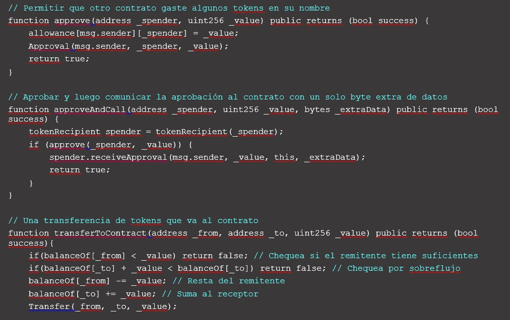

Resumen
El presente trabajo se centrará en los contratos inteligentes o “Smart contracts”. Son acuerdos autoejecutables que se basan en la tecnología blockchain. Estos contratos permiten a las partes realizar transacciones sin intermediarios, garantizando la seguridad, la transparencia y la eficiencia. Los contratos inteligentes tienen un impacto sobre la teoría general de los actos jurídicos, ya que plantean nuevos desafíos y oportunidades para el derecho, como la pregunta acerca de su naturaleza jurídica. Por un lado, los contratos inteligentes pueden facilitar la autonomía de la voluntad, la prueba y el cumplimiento de los contratos. Por otro lado, los contratos inteligentes pueden generar problemas de validez, interpretación, modificación y extinción de los contratos y el presente trabajo tratará en el efecto de esta novedosa forma de contratación en la teoría de la causa de los actos jurídicos en el derecho argentino. Por lo tanto, se requiere un marco jurídico adecuado que regule y armonice sus ventajas e inconvenientes.
Palabras claves: Contratos Inteligentes, Smart contracts, Actos Jurídicos, Contratos, Blockchain.
Introducción
Es esencial que los profesionales del ámbito legal se aproximen a la tecnología blockchain para comprender a fondo tanto sus posibilidades como sus limitaciones.
Según el Foro Económico Mundial (1), se proyecta que para el año 2027, el 10% del Producto Bruto Global estará registrado en blockchain, mientras que Gartner (2) pronostica que dicho sector alcanzará un valor aproximado de 3.1 trillones de dólares para el año 2030, con 1.5 trillones de dólares en tan solo cinco años. Para contextualizar esto, considerando un Producto Bruto Interno (PBI) de Argentina de 519 mil millones de dólares en 2018, la tecnología de cadenas de bloques, comúnmente conocida como blockchain, podría generar en una década un nuevo mercado equivalente a seis veces el PBI argentino. En otras palabras, se estaría hablando de la creación de un mercado con un valor seis veces mayor que la economía argentina.
Si analizamos esta tendencia a nivel mundial podremos inferir que los contratos inteligentes jugaran un rol fundamental, ya que a partir del avance de la tecnología de cadena de bloques se pueden desarrollar software cuyo soporte se encuentra en la misma cadena. Este tipo de programas pueden contener información que sería similar a un contrato tradicional con la característica de ser autoejecutable. Por lo tanto, si está tendencia en la adopción de la tecnología blockchain continua los Contratos inteligentes serán una modalidad de contratación que movilizará una importante cantidad de capitales y de uso extendido en las transacciones comerciales.
Actualmente, su aplicación se ha extendido a una gran diversidad de casos, que incluyen desde la creación de activos tokenizados (que son representaciones digitales de derechos sobre activos reales o virtuales) hasta sistemas de votación descentralizados, donde proporcionan un nivel de seguridad y transparencia muy superior al de los sistemas convencionales.
En sectores como los seguros o el mercado inmobiliario, los contratos inteligentes están ganando popularidad debido a que son capaces de automatizar las cláusulas contractuales, como los pagos por daños en seguros o las transferencias de propiedad de bienes raíces, sin necesidad de intervención humana o intermediación de terceros. Esto ofrece la promesa de procesos más eficientes y tiempos de ejecución más cortos.
A pesar de estos avances, todavía nos encontramos en una etapa incipiente en lo que respecta a la regulación específica de estos contratos inteligentes, lo cual resulta en desafíos que afectan su adopción masiva. No obstante, los contratos inteligentes ya están siendo reconocidos por su capacidad para cambiar modelos de negocio y por la eficiencia y ventajas económicas que ofrecen.
Dicha creación de valor, tan significativa, no debería llevarse a cabo sin un respaldo legal que enriquezca el proceso y aporte un manejo eficiente de los riesgos involucrados. En los últimos años y en particular posterior a la pandemia de COVID-19 innovaciones como la Inteligencia Artificial, el Blockchain, el Internet de las Cosas (incluyendo el Internet Industrial de las Cosas, IIoT) y la Computación Cuántica, han avanzado como no se tiene precedente y que posteriormente se combinarán de maneras aún no concebidas, madurando en la próxima década.
Motivan la presente investigación, acercar algún tipo de respuestas a preguntas como: ¿Qué es la blockchain? ¿Qué son los contratos inteligentes?; ¿Cuál es su naturaleza jurídica? ¿Cuál es el efecto de los contratos inteligentes en la teoría general de los actos jurídicos y de los contratos?
En el presente trabajo se abordará la temática desde un análisis acerca de que son los Smart contracts o Contratos inteligentes para la doctrina jurídica especializada en blockchain. Partiendo de este análisis se realizará una comparación con las categorías conceptuales de actos jurídicos y contratos para la normativa argentina vigente a fin de analizar su adecuación normativa con estas categorías. Para esta ultimo objetivo se tendrán en consideración el desarrollo doctrinario de autores argentinos especializados en derecho civil y comercial.
1 Confr. World Economic Forum, Deep Shift: technology tipping points and societal impact, p. 24, 2015.
2 David Furlonger y Christophe Uzureau, Confr. Gartner, Inc., The real business of blockchain, Harvard Business Review Press, p. 3, Cambridge, 2019.
Blockchain
Para comenzar este trabajo definiremos que es una “blockchain” para lo cual es necesario también tratar el surgimiento de las monedas digitales o criptomonedas entre las que se destaca “Bitcoin”.
El surgimiento de las blockchain y las criptomonedas está intrínsecamente vinculado a la criptografía y al movimiento Cypherpunk. Los Cypherpunks, un grupo que emergió a principios de los años 90, abogaban por el uso extensivo de la criptografía para preservar la privacidad y la seguridad de los individuos contra la vigilancia del gobierno y de grandes corporaciones. Consideraban que la capacidad de comunicarse de manera privada era fundamental para la libertad individual.
La criptografía es una disciplina de las matemáticas y la informática que se ocupa de asegurar la comunicación a través de la codificación de mensajes, de manera que solo los interlocutores que poseen las claves tanto públicas como privadas puedan leerlos. Esta práctica es esencial para crear monedas digitales seguras y confiables.
Desde 1983 se han presentado propuestas para crear dinero digital configurado con un servidor central para resolver el problema del doble gasto (3). Con los avances ulteriores en técnicas de criptografía, se cambió el enfoque para resolver el problema del doble gasto y se presentó una importante iniciativa conocida como B-Money: una forma de dinero electrónico controlada por técnicas de criptografía y no por bancos centrales o bancos comerciales, utilizando pseudónimos a través de claves públicas para enviar mensajes entre los miembros de la comunidad. Cada participante mantendría una base de datos separada con información de cuánto dinero correspondía a cada pseudónimo (es decir, a cada llave pública), de modo de evitar el doble gasto. Se podría generar nuevo B-Money solo solucionando problemas matemáticos no resueltos antes. Como veremos más adelante, esta lógica es muy similar a la lógica subyacente de Bitcoin.
Hace 15 años, en octubre de 2008, blockchain emergió como la tecnología subyacente de Bitcoin. Desde entonces, ha habido un amplio consenso en que se trata de una nueva tecnología fundacional, similar al impacto que tuvo internet en la década de los noventa.
Blockchain representa la evolución de la economía peer-to-peer. Combina algoritmos criptográficos, bases de datos distribuidas y mecanismos descentralizados de consenso. Esto permite a las personas acordar la existencia de transacciones específicas y registrarlas de manera segura y auditable.
3 El doble gasto (double spending) es un problema clásico en las criptomonedaa y la blockchain que se refiere a la posibilidad de que un usuario gaste el mismo bitcoin o otra criptomoneda más de una vez.
¿Qué es una blockchain?
Gartner, en una obra reciente (4), define blockchain como un mecanismo digital para crear un libro de registros digital y distribuido. En este sistema, dos o más participantes integrantes de una red peer-to-peer pueden intercambiar información y activos de manera directa, sin intermediarios.
La blockchain valida que los participantes tengan los activos sobre los que desean transar y registra los intercambios en dicho libro de registros digital. Todos los partícipes tienen una copia actualizada de este registro, cuyos asientos o registros no son modificables. Estos registros se organizan cronológicamente y se empaquetan en bloques, que están encriptados y vinculados entre sí. De ahí el nombre “cadena de bloques”.
Los elementos esenciales de la blockchain son los siguientes:
1. Distribución: Los participantes están físicamente separados pero conectados a través de una red de la cual son nodos, con acceso al registro.
2. Encriptación asimétrica y pseudonimia.
3. Inmutabilidad, salvo que se acuerde lo contrario
4. Tokenización: Las transacciones en una blockchain involucran la transferencia segura de valor en forma de tokens, que representan activos o pueden ser una forma de retribuir a los participantes, o incluso datos agrupados.
5. Descentralización: La red y sus protocolos son operados y mantenidos en múltiples computadoras de la red distribuida, lo que significa que no hay una sola computadora que corra la blockchain.
Wright y De Filippi definen la blockchain como una base de datos de transacciones cronológica, gestionada por una red de computadoras. En esta cadena de bloques, los datos se organizan en conjuntos más pequeños llamados bloques, y cada bloque contiene información sobre un grupo específico de transacciones. Además, incluye una referencia (hash) al bloque inmediatamente anterior y la solución a un problema matemático complejo que valida los datos asociados a ese bloque en particular.
Cada nodo en la red almacena una copia completa de la cadena y se sincroniza periódicamente para asegurar que todas las computadoras tengan la misma base de datos. Las operaciones en una blockchain se validan mediante una huella digital generada a través de una función de hash, como SHA-256 en el caso de Bitcoin. Para garantizar que solo transacciones legítimas se agreguen a la cadena, la red de computadoras debe confirmar que la nueva transacción es válida y no invalida ninguna transacción anterior. Solo cuando existe consenso entre los nodos, se agrega un nuevo bloque a la cadena.
El Proof of Work (PoW) es el mecanismo más común para lograr este consenso. Depende de la cantidad de poder de cómputo donado para mantener la red. Una vez que se agrega un nuevo bloque, no se puede borrar, y todas las transacciones contenidas en él pueden ser verificadas por toda la red.
Imagina que la blockchain es como un gran libro de cuentas digital compartido. En lugar de estar en papel, está en una red de computadoras. Cada vez que alguien realiza una transacción (como enviar criptomonedas), se agrega un nuevo “bloque” a este libro.
Cada bloque contiene información sobre varias transacciones y está enlazado al bloque anterior. Pero aquí viene lo interesante: antes de agregar un bloque, se resuelve un problema matemático complicado. Esto garantiza que todo sea legítimo y evita el doble gasto.
Cada persona en la red tiene dos “llaves”: una llave privada (como una contraseña secreta) y una llave pública (que todos pueden ver). Cuando alguien quiere enviar una moneda digital a otra persona, comparte su llave pública. El destinatario usa su llave privada para confirmar la transacción.
Lo sorprendente es que estas llaves públicas no están vinculadas a la identidad real de las personas. Aunque todas las transacciones son rastreables, no se sabe quién está detrás de cada llave pública. Es como un sistema de confianza anónimo y seguro.
4 David Furlonger y Christophe Uzureau , Confr. Gartner, Inc., The real business of blockchain, , publicado por Harvard Business Review Press, p.10, Cambridge, 2019.
Evolución de la tecnología blockchain
La evolución de la tecnología blockchain ha sido fascinante y ha dado lugar a diferentes etapas. Aquí están los tres estadios clave:
Blockchain 1.0: Criptomonedas
La primera aplicación de la tecnología blockchain fue la criptomoneda, específicamente Bitcoin. Aquí, la cadena de bloques se utilizó para registrar transacciones de criptomonedas de manera segura y descentralizada.
Blockchain 2.0: Smart contracts (SC)
En esta etapa, surgieron los contratos inteligentes. Estos ampliaron la funcionalidad de la tecnología blockchain más allá de las criptomonedas. Los contratos inteligentes permiten automatizar acuerdos y transacciones sin intermediarios. Tienen una aplicación práctica en múltiples sectores, pueden utilizarse en acciones, bonos, préstamos, contratos de futuro, hipotecas, inversiones, crowdfunding, y en general, toda clase de smart contracts y smart property.
Blockchain 3.0: Aplicaciones Descentralizadas (dApps)
Se introdujeron las aplicaciones descentralizadas (dApps). Estas son aplicaciones que se ejecutan en la cadena de bloques y no dependen de una entidad central. Ethereum es un ejemplo destacado de esta etapa, ya que permite el desarrollo de dApps. Este estadio en la evolución de la blockchain “exporta” sus bondades a otros sectores no tan vinculados a los servicios financieros, hacia el área del gobierno, la cultura, el arte, la salud, la ciencia y la literatura.
Smart contracts
Los contratos inteligentes están relacionados con un artículo escrito por Nick Szabo (5) en 1997 y publicado en su blog. Sin embargo, en ese momento, su relevancia práctica era bastante limitada. Fue Bitcoin el que realmente impulsó la adopción y el uso de los contratos inteligentes.
Szabo los define como “un protocolo de transacción informatizado que ejecuta los términos de un contrato" y como, "un conjunto de promesas, especificadas en el formato digital, dentro del cual las partes realizan en estas promesas".
Sin embargo, la doctrina más moderna cuestiona esta definición de Szabo. Eliza Mik, sostiene que muchos smart contracts no son, en realidad, contratos en un sentido legal. Existe confusión en esta materia. Según Mik, lo único que realmente son los contratos inteligentes es un programa que se ejecuta en la blockchain. Además, Mik argumenta que las publicaciones de Szabo contienen errores y que es necesario distinguir entre smart contracts en sentido tecnológico y smart contracts en sentido legal. Debemos aceptar que esta primera definición, más amplia, puede incluir a la definición más escueta. La Profesora Mik argumenta que programar la lógica de negocio dentro de un software o hardware específico no convierte automáticamente a dicho hardware o software en un contrato. Por ejemplo, una máquina dispensadora o un sitio web no son contratos, sino que simplemente entregan bienes o autorizan el acceso cuando se ha realizado el pago correspondiente. Automatizar una transacción o ciertas partes de ella no implica necesariamente la existencia de un contrato, ni hace que la transacción en sí misma sea inteligente.
A nivel institucional, existen conceptualizaciones relevantes sobre los Smart contracts. Por ejemplo, la prestigiosa Cámara de Comercio Digital de EE. UU. los define como “código de computadora” que, cuando se cumplen ciertas condiciones especificadas, se ejecuta automáticamente según una serie de funciones predefinidas. Este código puede almacenarse y ejecutarse en un registro distribuido, y puede registrar cualquier cambio resultante. Es importante destacar que un smart contract no siempre es un contrato en el sentido legal, sino más bien una forma avanzada de instrucciones condicionales, expresadas en código de computadora, como “Si ocurre X, entonces Y” escrito en código de programación.
Ejemplo de cogido de smart contract:

5 Nicholas Szabo es un científico informático, doctor en derecho y criptógrafo estadounidense conocido por sus investigaciones sobre contratos digitales y moneda digital. Fue el desarrollador de BitGold precursor de Bitcoin.
Naturaleza Jurídica de los smart contracts
Clasificación de los contratos Inteligentes
Existen variadas clasificaciones de los contratos inteligentes cuyos criterios son:
- Nivel de automatización de la ejecución contractual: Este aspecto se refiere al grado de automatización con el que se ejecuta un contrato inteligente. ¿Hasta qué punto se lleva a cabo sin intervención humana?
2. Separación entre términos acordados y términos codificados: Aquí nos preguntamos cuánta distancia existe entre los términos establecidos en el contrato convencional subyacente y los términos que están codificados en algún lenguaje computable. ¿Son idénticos o hay diferencias?
3. Ubicación del código del contrato inteligente y su discreción: ¿Dónde reside el código que define el contrato inteligente? Además, ¿hasta qué punto el contrato tiene “discreción” para ejecutar sus instrucciones sin interferencia de las partes involucradas?
Sin embargo, una clasificación interesante que nos permite analizar la naturaleza jurídica de los contratos inteligentes es la del Observatorio y Foro de Blockchain de la Unión Europea y divide esta nueva realidad “contractual” en dos categorías (6):
Smart Legal Contracts (Contratos Legales Inteligentes): estos contratos se encuentran en una cadena de bloques y representan o emulan un contrato en el sentido legal. En una legislación determinada, estos contratos son legalmente válidos al cumplir los requisitos exigidos para cualquier contrato.
Smart contracts con Implicancias Legales: estos son artefactos basados en nuevas tecnologías que claramente tienen implicancias legales. Pueden programarse para representar activos de forma digital, crear DAOs (Organizaciones Autónomas Descentralizadas), actuar como agentes descentralizados.
A lo que algunos autores agregan una tercera categoría que son los smart contracts que no producen efectos jurídicos, como una categoría minoritaria y residual. De acuerdo con lo mencionado anteriormente, es relevante destacar que tanto los contratos inteligentes que buscan generar efectos jurídicos como aquellos que no lo hacen, deben seguir una estructura común en su programación. Esto nos lleva a inferir que, en términos de codificación, no existe un elemento diferenciador real entre uno y otro.
Además, esta realidad nos permite afirmar que, independientemente del posterior desarrollo y aplicación del contrato inteligente, este siempre se mantendrá como un código informático. Surge entonces la pregunta: si para crear un contrato inteligente que produzca efectos jurídicos se utiliza la misma herramienta de programación que para aquellos que no los generan, ¿dónde radica la diferencia fundamental entre ambos?
En resumen, más que ser conceptos opuestos, los contratos inteligentes que desencadenan efectos jurídicos y aquellos que no lo hacen podrían considerarse dos variantes dentro de una misma especie.
6 Confr. European Union Blockchain Observatory and Forum, Legal and regulatory framework of blockchains and smart contracts, p. 23, 2020.
Contratos inteligentes como mecanismo de consentimiento
Al hablar de estos contratos inteligentes, no se debe caer en el error de creer que su nombre los define. Aunque es cierto que “el contrato es la manifestación más frecuente del acto jurídico”, lo cual hace que estos sean las expresiones de voluntad más comúnmente registradas en los sistemas jurídicos. La posibilidad de plasmar manifestaciones de voluntad relacionadas con otros actos jurídicos amplía el ámbito contractual del sistema legal, considerándolo solo como una de las muchas especies que se engloban dentro de esta institución jurídica.
Sobre la base de lo anterior nace la necesidad de plantearse una teoría lo suficientemente amplia, que permita descifrar la naturaleza jurídica de los SC. Por lo cual, un enfoque novedoso plantea que la naturaleza jurídica de los SC, es ser un mecanismo mediante el cual las partes plasman la voluntad de sus acuerdos.
La formación del consentimiento a través de un acuerdo de voluntades se desarrolla en un proceso. Inicialmente, después de realizar sucesivas ofertas y contraofertas, las partes finalmente llegan a un acuerdo. Este acuerdo se expresa en lenguaje natural. Sin embargo, para formalizarlo, se requiere un segundo paso: traducirlo a términos jurídicos.
En el caso de los contratos inteligentes, esta dinámica no difiere significativamente, pero se agregan dos momentos inherentes a su naturaleza digital:
1. Acuerdo en lenguaje natural: Las partes deben llegar a un acuerdo utilizando lenguaje natural.
2. Traducción a términos jurídicos: Luego, este acuerdo se traduce a términos legales.
3. Traducción a lenguaje condicional: Dado que los lenguajes de programación funcionan con variables, los términos jurídicos se traducen a lenguaje condicional.
4. Traducción a código binario: Finalmente, este lenguaje condicional se convierte en lenguaje binario para que las computadoras puedan interpretarlo y ejecutarlo automáticamente a través de la tecnología blockchain.
Fenómeno de los contratos inteligentes en la legislación argentina
El actual Código Civil y Comercial de la Nación Argentina, sigue en esencia la definición de su antecesor código y los define en su art. 259 como “el acto voluntario licito que tiene por fin inmediato la adquisición, modificación o extinción de relaciones o situaciones jurídicas”.
A su vez el código argentino, define a los contratos en su art. 957 como “acto jurídico mediante el cual dos o más partes, manifiestan su consentimiento para crear, regular, modificar, transferir o extinguir relaciones jurídicas patrimoniales”.
Por lo tanto, si analizamos lo expuesto anteriormente sobre los contratos inteligentes podremos inferir que siempre y en cuanto estos actos cumplan con los elementos esenciales de los actos jurídicos que son la voluntad, el objeto y la causa; podrán ser instrumentados a través de un smart contract.
Con el fin de ejemplificar lo expresado, se revisará una propuesta de testamento a través de una cadena de Ethereum y el uso de un contrato inteligente. Con lo cual se puede ver que este negocio Jurídico característico del derecho sucesorio podría también verse incluido dentro de la esfera de aplicación estos contratos. Con la salvedad que este sistema opera siempre y cuando los bienes que sean objeto de esta transacción sean activos digitales o digitalizados. A continuación, se describirá los pasos propuestos para esta aplicación práctica, a través de múltiples contratos, y la intervención de varios participantes que cargarán información al blockchain.
Las fases serán la siguientes:
1. Inicial: creación de los protocolos que albergarán el contenido del testamento y del certificado de defunción.
2. Registro: de todos los roles a participar en la transacción, es decir testador, herederos, juzgado, hospital.
3. Edición de testamento: el testador detallará la forma en la que se repartirán los bienes, para posteriormente enviarlo al juzgado para su verificación. Una vez verificado, el juzgado desplegará el testamento al blockchain.
4. Elaboración de certificado de defunción: a petición de los herederos, se solicitará al hospital que elabore el certificado de defunción, previa verificación del fallecimiento. Una vez elaborado el certificado se lo desplegará al blockchain.
5. Distribución: con la verificación de la muerte, el contrato ejecutará la distribución de los bienes del testador acorde al testamento.
Si los actos jurídicos, además, cumplen con los elementos esenciales de los contratos sobre los cuales existe cierto acuerdo en considerar que son el consentimiento, el objeto y la causa, podremos afirmar que son verdaderos contratos y los cuales se pueden instrumentar a través de un smart contract.
Sin embargo, el contrato inteligente debido a sus características particulares, como el lenguaje de programación sobre el cual se diseña, la particularidad de ser autoejecutables propone ciertas ventajas, pero también nos genera nuevas preguntas.
Estas características, entre las más sobresalientes, en cierto punto chocan con algunos principios e instituciones de la teoría general de los actos jurídicos y de los contratos.
Forma
Siguiendo la opinión del autor español Legerén-Molina, Mora sostiene que los contratos inteligentes son una modalidad de los contratos electrónicos.
n este contexto, Mora argumenta que la validez de los contratos electrónicos se ha aceptado desde hace años, basándose en las equivalencias entre documentos físicos y digitales, la validez de las firmas electrónicas y las equiparaciones entre firmas manuscritas y digitales. Estas disposiciones se establecieron en nuestro país a través de la Ley de Firma Digital y posteriormente fueron ratificadas por el Código Civil y Comercial de la Nación (CCCN).
Siguiendo la opinión de Mora, Andrés Chomczyk también sostiene que no existe una norma legal en Argentina que prohíba a los particulares usar contratos inteligentes para celebrar e instrumentar acuerdos. La única limitación se presenta en los casos en los que el tipo de relación jurídica que se pretende formalizar exige el cumplimiento de ciertas formalidades, bajo pena de nulidad del acto subyacente o simplemente configurando una promesa de realizar el acto en cuestión con las formalidades requeridas (por ejemplo, contratos formales).
Chomczyk afirma que, si el tipo de contrato lo permite, no habrá obstáculos para que las partes expresen su consentimiento a través de software para crear, regular, modificar, transferir o extinguir una relación jurídica. Además, al regir la libertad de formas, se debe analizar si el soporte electrónico es adecuado para cumplir con el requisito de escritura exigido para varios de los contratos tipificados por el Código Civil y Comercial de la Nación (CCCN).
Artículo 284 - Libertad de formas: Si la ley no designa una forma determinada para la exteriorización de la voluntad, las partes pueden utilizar la que estimen conveniente. Las partes también pueden convenir una forma más exigente que la impuesta por la ley.
Artículo 286 - Expresión escrita: La expresión escrita puede tener lugar por instrumentos públicos o por instrumentos particulares firmados o no firmados, excepto en los casos en que determinada instrumentación sea impuesta. Puede hacerse constar en cualquier soporte, siempre que su contenido sea representado con texto inteligible, aunque su lectura exija medios técnicos2.
Artículo 288 - Firma: La firma prueba la autoría de la declaración de voluntad expresada en el texto al cual corresponde. Debe consistir en el nombre del firmante o en un signo. En los instrumentos generados por medios electrónicos, el requisito de la firma de una persona queda satisfecho si se utiliza una firma digital, que asegure indubitablemente la autoría e integridad del instrumento.
Fulvio G. Santarelli agrega que, en materia contractual, el artículo 1015 del CCCN ratifica el principio de libertad de formas. Además, el artículo 1019 del CCCN regula las reglas de prueba de los contratos, mostrando una clara apertura en cuanto a la elegibilidad de formas. Esto permite sostener que el CCCN podría admitir acuerdos expresados en códigos de programación en lenguaje no natural.
En el ámbito de los contratos de consumo, la utilización de medios electrónicos también recibe su propia regulación. El artículo 1106 del CCCN establece que, si se exige que un contrato conste por escrito, este requisito se considera satisfecho si el contrato con el consumidor o usuario contiene un soporte electrónico u otra tecnología similar. Además, el artículo 1107 del CCCN dispone que, si las partes utilizan técnicas de comunicación electrónica para celebrar un contrato a distancia, el proveedor debe informar al consumidor sobre el contenido mínimo del contrato, la facultad de revocación y todos los datos necesarios para utilizar correctamente el medio elegido y comprender los riesgos asociados.
En resumen, el ordenamiento jurídico permite la utilización de soportes distintos a los usuales, siempre que estén debidamente informados. Por lo tanto, se puede concluir que un contrato autoejecutable, celebrado en lenguaje informático no natural, es legalmente viable.
Problemática del contrato inteligente como contrato por adhesión
Chomczyk señala que una práctica común en los Contratos inteligentes es la imposición de software por una de las partes a la otra. En este escenario, una de las partes decide qué software recibirá los derechos y obligaciones acordados, sin permitir discutir la redacción o programación del contrato inteligente.
Como resultado, es válido considerar a estos contratos inteligentes como contratos con cláusulas predispuestas, aquellos regulados por los artículos 984 y siguientes del CCCN.
Art. 984, CCCN. - Definición. El contrato por adhesión es aquel mediante el cual uno de los contratantes adhiere a cláusulas generales predispuestas unilateralmente, por la otra parte o por un tercero, sin que el adherente haya participado en su redacción.
Otra nota característica de los contratos por adhesión es la presencia de cláusulas generales, aquéllas pensadas para regular una contratación en masa, y no para un caso particular, y que, además no son cláusulas negociables. Este tipo de cláusulas deben satisfacer ciertos requisitos, consignados en el Art. 985 del CCCN.
Art. 985: Requisitos: Las cláusulas generales predispuestas deben ser comprensibles y autosuficientes.
La redacción debe ser clara, completa y fácilmente legible.
Se tienen por no convenidas aquellas que efectúan un reenvío a textos o documentos que no se facilitan a la contraparte del predisponente, previa o simultáneamente a la conclusión del contrato.
La presente disposición es aplicable a la contratación telefónica, electrónica o similares.
Según Chomczyk, considerar al contrato inteligente como un contrato celebrado por adhesión plantea dos problemas:
1. Falta de claridad y facilidad de lectura: si el texto del contrato está limitado al código, podría haber un incumplimiento del párrafo 2 del Artículo 985 del CCCN debido a la falta de claridad inherente al lenguaje de programación.
2. Posibilidad de nulidad de cláusulas abusivas: además, existe la posibilidad de que ciertas cláusulas sean consideradas abusivas y, por lo tanto, nulas.
En este contexto, un juez podría estimar que: 1) El contrato no cumple con los elementos de claridad y transparencia necesarios para ser considerado un contrato. 2) Es necesario integrar el contrato con elementos adicionales fuera del código, lo que podría reducir la autosuficiencia del contrato inteligente y convertirla en una actividad superflua. El desafío con la integración judicial de los contratos inteligentes radica en cómo garantizar que la orden judicial sea seguida por el protocolo que gobierna el contrato inteligente.
Evidentemente, la respuesta a los interrogantes que con razón plantea Chomczyk no puede darse en abstracto, y solo podrán responderse atendiendo a los siguientes factores:
1. Circunstancias específicas: se debe considerar el contexto particular de las personas involucradas, el tiempo y el lugar. Esto incluye aspectos como la imprudencia, la negligencia y la impericia profesional.
2. Significado específico de las palabras: las palabras empleadas en el contrato deben interpretarse según su significado específico, a menos que deban entenderse en el sentido generalmente aceptado.
3. Deber de obrar con prudencia y conocimiento: Se debe evaluar si las partes actuaron con prudencia y pleno conocimiento de las circunstancias, incluyendo la previsibilidad de las consecuencias en entornos on-chain.
4. Confianza especial y naturaleza del acto: es relevante considerar si existe una confianza especial entre las partes y si la naturaleza del acto influye en la evaluación.
5. Error esencial: se debe analizar si es posible invocar un error esencial por parte del adherente. Esto incluye errores relacionados con la naturaleza del acto, resultados diferentes a los pretendidos, calidad o extensión distintas, y motivos personales relevantes.
6. Error de cálculo: si se trata de un error de cálculo, y si este fue determinante.
7. Deber de prevención y mitigación de daños: se debe verificar si se cumplió con el deber de prevenir daños injustificados y si se tomaron medidas para disminuir su magnitud o evitar agravarlos.
8. Negociaciones preliminares y conducta posterior: las negociaciones previas y la conducta posterior de las partes también son relevantes en la evaluación, como la naturaleza y finalidad propia de los contratos inteligentes.
Relación con la causa de los actos jurídicos.
Durante la vigencia del código velezano la cuestión de que si la causa constituye o no un elemento de los actos jurídicos fue motivo de un arduo debate. El CCCN trata explícitamente la causa como un elemento de los actos jurídicos, siguiendo los desarrollos del neocausalismo la define en su art. 281.
“Art. 281. Causa. La causa es el fin inmediato autorizado por el ordenamiento jurídico que ha sido determinante de la voluntad.” (Causa objetiva) “También integran la causa los motivos exteriorizados cuando sean lícitos y hayan sido incorporados al acto en forma expresa o tácitamente si son esenciales para ambas partes” (Causa Subjetiva).
Para el CCCN la causa subyace en la etapa genética del acto jurídico y es uno de sus elementos esenciales por lo que la idea de a causa subjetiva en la etapa genética del contrato fundamenta la anulación de los actos jurídicos en los casos de causa errónea y causa simulada (supuesto de causa falsa) por error en la causa (Art. 267) y por simulación (art. 333).
La causa objetiva en esta etapa sirve fundamentalmente para tipificar el contrato de que se trate más allá de como lo hayan denominado las partes (Art. 1127).
Por otro lado, la noción de objetiva de causa final en la etapa funcional del acto jurídico fundamenta: el pacto comisorio expreso y tácito (Art. 1083); la excepción de incumplimiento (art. 1031); la imposibilidad de pago (art. 955); la teoría de la imprevisión (art. 1091), la garantía por vicios redhibitorios y de evicción. En este sentido la subsistencia de la causa final es determinante para que el acto jurídico mantenga su vigencia y satisfaga los intereses de las partes.
La causa final se frustra cuando por alguna razón no puede satisfacerse la finalidad típica del negocio de que se trata o el motivo casualizado propio del negocio concreto.
La cuestión es tratada expresamente en el art. 1090 del CCCN: La frustración definitiva de la finalidad del contrato autoriza a la parte perjudicada a declarar su resolución, si tiene su causa en una alteración de carácter extraordinario de las circunstancias existentes al tiempo de su celebración, ajena a las partes y que supera el riesgo asumido por la que es afectada. La resolución es operativa cuando esta parte comunica se declaración extintiva a la otra. Si la frustración de la finalidad es temporaria, hay derecho a resolución solo si se impide el cumplimiento oportuno de una obligación cuyo tiempo de ejecución es esencial.
Ahora supongamos un caso de un contrato de mutuo el cual es instrumentado mediante un contrato inteligente, el cual es programado utilizando el lenguaje informático de Solidity (7), sobre la red de Ethereum (8). En este supuesto el mutuante transfiere la propiedad de una cierta cantidad de criptoactivos, estos serán transferidos por el contrato automáticamente cuando el mutuario transfiera al contrato inteligente una cierta cantidad de criptoactivos los cuales quedarán bloqueados como una forma de garantía a favor del mutuante. En caso de incumplimiento total o parcial de la obligación del mutuario de restituir los activos transferidos más los intereses en cierto plazo, el contrato automáticamente transferirá la propiedad de los criptoactivos depositados como garantía por el mutuario, al mutante, por considerar incumplidas las obligaciones del primero.
¿Pero qué sucede si el mutuario incumple por causas ajenas a su voluntad? ¿Qué sucede si las partes no previeron la posibilidad de renegociar ciertas clausulas como los plazos?
En este sentido David Black desde una perspectiva más crítica argumenta con que los contratos inteligentes no son verdaderos contratos ni poseen inteligencia real. Además, no resuelven los problemas fundamentales de la vida real por varias razones:
(i) al ser programas, deben escribirse en lenguajes como Solidity (principalmente utilizado en Ethereum), lo que dificulta su comprensión para la mayoría de las personas; (ii) la inmutabilidad de la blockchain impide detener o revertir su ejecución una vez desplegados; (iii) los errores de programación son inherentes a cualquier software, incluidos los contratos inteligentes; (iv) muchos términos contractuales no pueden expresarse de manera completa mediante líneas de código.
Con una visión similar, se ha argumentado que, aunque es cierto que los actores con más recursos generalmente obtienen mejores resultados en los tribunales que los más pobres, el poder transformador genuino de los contratos inteligentes es cuestionable. Estos contratos se centran excesivamente en medidas preventivas de seguridad (ex ante) y no tanto en las correctivas (ex post). Esto no resuelve completamente el problema, de manera similar a cómo el cierre centralizado de puertas y las alarmas en un automóvil no eliminan la necesidad de presencia y persecución policial cuando ocurre un robo. Críticamente, se ha afirmado que los contratos inteligentes, debido a su inherente limitación como programas, no pueden capturar las complejidades sociales que rodean la costumbre de contratar, y su inflexibilidad puede ser indeseada. Las ventajas que se le destacan a los contratos inteligentes como la auto ejecución y la posibilidad de evitar los costos de recurrir a una solución judicial, si no se prevén las posibles variables de renegociar clausulas, modificar plazos, etc. pueden generar mayores costos a las partes al tener que solucionar sus conflictos por fuera de código programado y generar situaciones de evidente injusticia.
Sin embargo, utilizar un contrato inteligente para plasmar una relación forma parte de su derecho a la libre disposición, y a través de ella las partes dan prioridad a la ejecución contractual en el caso en que se den las circunstancias previstas en el contrato, en vez de tener que perseguirla forzosamente en caso de incumplimiento. En cambio, para el caso de que las consecuencias obtenidas por el contrato inteligente sean diferentes a las perseguidas por las partes, estas litigarían para conseguir la restitución de las circunstancias a la situación anterior o la reversión de las transacciones efectuadas, en vez de que lo perseguido sea la ejecución contractual –la cual, como se ha dicho, se prioriza–, como sucedía en la contratación tradicional. En consecuencia, no parece correcto afirmar que las transacciones devienen irrevocables por el simple hecho de establecerse criptográficamente.
7 Solidity es el lenguaje de programación utilizado para definir las reglas y la lógica detrás de los contratos inteligentes en la cadena de bloques de Ethereum.
8 Ethereum es una plataforma descentralizada que permite escribir códigos para controlar el dinero y construir aplicaciones accesibles desde cualquier parte del mundo. Su criptomoneda nativa es el Ether (ETH), que se utiliza para recompensar a los mineros y pagar tasas de transacción.
Conclusiones
Una de las principales conclusiones, si no la más importante, de este trabajo es la posibilidad de que los contratos inteligentes puedan considerarse formas contractuales legalmente válidas. Están sujetos a los requisitos generales de validez de los contratos. Gracias a la libertad de forma consagrada en nuestro Código Civil y Comercial, el hecho de que estén redactados en forma de código informático no debería suponer ningún obstáculo, excepto para los contratos que la ley exige una forma específica para su validez. De esta manera, los contratos inteligentes tienen la naturaleza de contrato electrónico. Sin embargo, aunque es posible encontrar soluciones satisfactorias con esta conceptualización, resulta insuficiente debido a la incapacidad de abarcar todas las características esenciales de la figura. Por lo tanto, sería interesante comenzar a estudiar la creación de un concepto jurídico propio para los contratos inteligentes y otras innovaciones similares.
En segundo lugar, son numerosas las ventajas existentes en la aplicación de los contratos inteligentes a las relaciones contractuales. La invariabilidad (en principio) de lo programado hace que los contratos inteligentes se adapten especialmente bien a situaciones con bajo nivel de incertidumbre y repetitivas. Adicionalmente, los contratos inteligentes son capaces de dar solución a la falta de confianza entre las partes, haciendo innecesarias las labores de vigilancia. Asimismo, suponen un ahorro en términos de costes de transacción desde la fase de negociación hasta la de perfección del contrato. No obstante, existen diversos artículos doctrinales que argumentan que, si bien los contratos inteligentes disminuyen claramente los costes de transacción, dan lugar a la aparición de otro tipo de costes, como los costes de redacción o modificación. En última instancia, existen dos tendencias contrapuestas que deben valorarse para confirmar que verdaderamente se consigue el ahorro en costes pretendido. Esta valoración debe realizarse atendiendo a la relación concreta a la que se quiere aplicar el contrato inteligente, sin pretender alcanzar soluciones generales. Si la valoración no se realiza considerando las particularidades de la relación concreta, podrían generarse más costes que beneficios.
Los contratos inteligentes reducen el riesgo de interpretaciones discordantes de los datos de entrada entre las partes, facilitan la verificación de la identidad, generan mayor transparencia al asegurar la corrección de los registros y garantizan el cumplimiento de los requisitos de cumplimiento que se establezcan. Además, contribuyen a la generación de nuevos modelos de negocio.
En contraposición a las ventajas anteriores, la doctrina ha realizado importantes consideraciones sobre los contratos inteligentes que deben tenerse en cuenta. En primer lugar, se ha criticado que no sean capaces de prever todos los supuestos de hecho que pueden producir consecuencias jurídicas en virtud del contrato. Sin embargo, esto es una problemática intrínseca al fenómeno de las relaciones contractuales: incluso si un contrato hubiera previsto infinitas situaciones de hecho para su redacción, no estaríamos hablando de un contrato inteligente, sino de un contrato muy completo. Por otra parte, el costo asociado a los errores o circunstancias imprevistas en el contrato puede ser muy alto. Sin embargo, muchas de estas situaciones pueden solucionarse mediante la generalización de buenas prácticas en la redacción y utilización de los contratos inteligentes.
Por último, los contratos inteligentes pese a sus evidentes ventajas por sobre la contratación tradicional actualmente tendrían muchas dificultades a la hora de instrumentarse ciertos contratos mediante esta modalidad, como por ejemplo los contratos por adhesión y los contratos de consumo. Es por esto que se hace necesario contar con una legislación específica que los defina, que determiné el alcance de sus efectos y sus requisitos. Por tanto, si bien los contratos inteligentes surgieron hace varias décadas la difusión de su uso es reciente y demandan una legislación específica por parte de los ordenamientos jurídicos.
Referencias bibliográficas
Ballabriga Solanas, T. (2019). Régimen jurídico y problemática de los contratos inteligentes. Revista CEF Legal. 227, 5-38.
Borda, Alejandro. [3ª ed.]. (2019). Derecho Civil y Comercial: contratos, Buenos Aires: La Ley.
Chomczyk Penedo, Andrés. (2019). Contratos Inteligentes o Software Obediente. Código Civil y Comercial de la Nación, Ley 26.994. (BO 08/10/2014), Argentina.
Fetsyak, Ihor. (2020). Contratos inteligentes: análisis jurídico desde el marco legal español. Revista Electrónica de Derecho de la Universidad de La Rioja. 197-236. 10.18172/redur.4898.
Heredia Querro, Sebastián. [1ª ed.]. (2020). Smart contracts: qué son, para qué sirven y para qué no servirán. Buenos Aires: IJ Editores.
MIK, Eliza. Smart contracts: Terminology, technical limitations and real world complexity. (2017). Law, Innovation and Technology. 9, (2), 269-300.
Rivera, Julio Cesar; Crovi, Luis. [1ª ed. 3ª reimpresión]. (2017). Derecho Civil Parte General, Buenos Aiires: Abeledo Perrot.
Viedma Carrasco, José Ricardo. (2022). “Naturaleza Jurídica y Efectos de los Smart Contracts”. USFQ Law Working Papers.